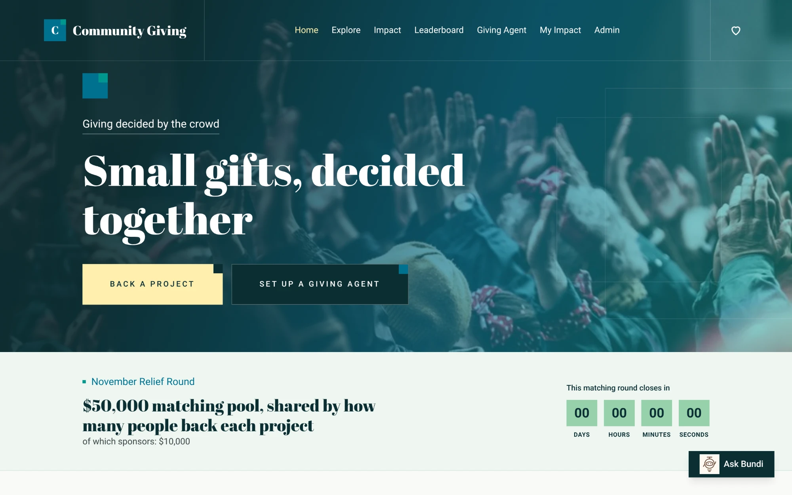

PROJECT 01 / NOV 2026
Community Giving
PayPal AI Hackathon · Team of three · Frontend owner
A community giving platform: the group decides where the money goes, AI agents protect it, rules keep it fair, and PayPal (sandbox) moves the money. I built the Next.js website, covering the donor app, project pages and admin console, alongside teammates who owned the FastAPI core API and the AI agents.